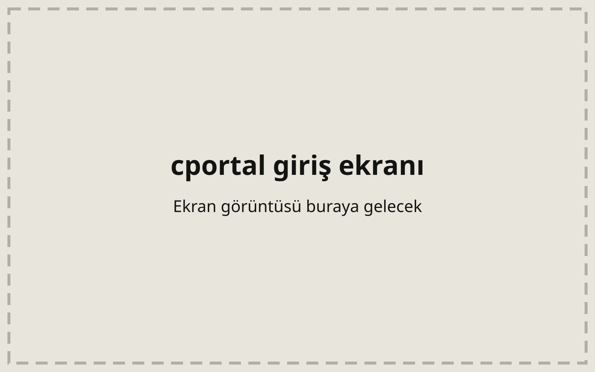

Yapay Zeka Eğitimleri, 1. hafta
Claude ile Tanışma
Yapay zekayı doğru, verimli ve güvenli kullanmaya ilk adım
Genç Kızılay ÇOMÜ Eğitim Birimi

Yapay zeka eğitimleri serisi
Dört hafta boyunca her salı yeni bir konu işleyeceğiz. Haftalar birbirinin üstüne kurulu, ama her biri tek başına da anlaşılır. Her eğitimin sonunda katılım belgesi veriliyor.
1. hafta, bugün
Claude ile Tanışma
Giriş yapmak, iyi soru sormak, cevabı kontrol etmek ve güvenli kullanım
2. hafta
Claude ile Yazmak
Dilekçe, duyuru, e-posta, özet ve resmî yazışmalar
3. hafta
Office ve yapay zeka
Word ve Excel işlerinde Claude'dan yardım almak
4. hafta
Kod yazmadan üretmek
Artifacts ile mini uygulama ve bir Kızılay projesi
Bugün ne yapacağız?
Bu eğitim bir ders değil, bir atölye. Anlatacağımız her şeyi birkaç dakika içinde kendi bilgisayarınızda deneyeceksiniz.
Tanışacağız
Yapay zekanın ne olduğunu konuşup Claude'a girerek ilk sohbetimizi yapacağız.
Doğru soracağız
İyi bir istemin formülünü ve cevabı ustaca iyileştirmenin yollarını öğreneceğiz.
Kontrol edeceğiz
Cevabı sınamayı, kişisel veriyi korumayı ve sorumlu kullanmayı öğreneceğiz.
Takılırsan el kaldır, yanındakiyle birlikte çalışmak serbest. Yanlış soru yoktur.
Isınma sorusu
Başlamadan önce küçük bir tahmin oyunu. Elinizi kaldırarak oy verin: Şu an izlediğiniz sunumu kim hazırladı?
Bugünün asıl konusu bu iş birliği: insan ne istediğini anlatır, yapay zeka hazırlar, insan kontrol edip düzeltir.
Yapay zekayı nerede gördünüz?
Çoğumuz farkında olmadan her gün yapay zeka kullanıyoruz. İki dakika boyunca kendi deneyimlerinizi paylaşın; hiç kullanmadıysanız da sorun yok.
Telefonun kelime önerisi ve sesli asistanlar
Fotoğraf filtreleri ve yüz tanıma
ChatGPT, Gemini, Claude gibi sohbet asistanları
1
Yapay zeka ve Claude
Yapay zeka nedir, nasıl çalışır ve Claude bu resmin neresinde duruyor?
Yapay zeka nedir?
Bilgisayarların insanlara özgü sandığımız işleri, yani anlamayı, tahmin etmeyi ve karar vermeyi yapabilmesi. Kurallar tek tek yazılmaz; sistem çok sayıda örnekten kendisi öğrenir.
Navigasyon
Anlık trafiğe bakıp seni en hızlı yoldan götürür.
Çeviri
Bir metni saniyeler içinde başka bir dile çevirir.
Öneriler
Ne izleyeceğini, ne alacağını senin geçmişine göre önerir.
Kamera
Yüzünü tanıyıp telefonunun kilidini açar.
Üretken yapay zeka
Klasik yapay zeka tanır ve sınıflandırır. Üretken yapay zeka ise yepyeni bir şey üretir: bir metin, bir görsel, bir ses ya da bir kod. Bugün konuşacağımız Claude bu türden bir sohbet asistanı.
Ne üretebilir?
- Duyuru, özet, e-posta, rapor
- Liste, tablo, plan, program
- Görsel, ses ve bilgisayar kodu
Bilinen sohbet asistanları
- Claude (Anthropic)
- ChatGPT (OpenAI), Gemini (Google)
- Copilot (Microsoft)
Nasıl çalışır?
Telefon klavyen yazarken bir sonraki kelimeyi tahmin eder. Bunu, daha önce yazdıklarından öğrendiği için yapabilir:
Yarın sabah erkenden kalkıpokulagideceğim
Claude da aynı fikirle çalışır, ama milyonlarca kitap, makale ve web sayfası okuyarak öğrendiği için tek kelimeyi değil; cümleleri, paragrafları, hatta bütün bir planı tahmin edebilir. Bilgiyi bir veritabanından okumaz, en olası cevabı yazar.
Claude nedir?
Anthropic şirketinin geliştirdiği yapay zeka asistanı; 2023'ten beri kullanımda.
Türkçe dahil birçok dilde akıcı biçimde konuşur ve yazar.
Tarayıcıda (claude.ai), telefon uygulamasında ve bilgisayar uygulamasında çalışır.
PDF, belge ve fotoğraf okuyabilir; uzun metinleri özetleyebilir.
Ücretsiz planla başlanır; ücretsiz planda günlük mesaj sınırı vardır.

Ekranda bu turuncu yıldızı gördüğün yer Claude.
Neler yapabilir, nelere dikkat?
Claude çok güçlü bir yardımcı, ama bir uzman ya da bir arama motoru değil. İki tarafı da bilmek, onu doğru yerde kullanmamızı sağlar.
Yapabilir
- Metin yazar, düzeltir, sadeleştirir
- Özetler, açıklar, çevirir
- Fikir, liste ve plan üretir
- Sabırla tekrar tekrar anlatır
Dikkat
- Yanılabilir, bilgi uydurabilir
- Her konuda güncel bilgisi yoktur
- Duygu ve yaşantısı yoktur
- Son karar ve sorumluluk sende
Boşluğu doldur
İlk bölümü dört cümleyle özetleyelim. Cevabı sesli söyleyin, sonra birlikte kontrol edelim.
Claude bir yapay zeka .
Claude bir sonraki kelimeyi ederek yazar.
Üretken yapay zeka yeni bir şey : metin, görsel, ses.
Claude da yapabilir, bu yüzden cevabı ederim.
2
Claude ile tanış
Bilgisayara gir, Claude'u aç ve ilk mesajını gönder. Üç adım, on dakika.
1. Adım: Bilgisayara giriş

- Tarayıcıda açılan kampüs ağı giriş sayfasına TC kimlik numaranı yaz
- UBYS şifreni yaz
- Giriş düğmesine tıkla
Şifreni hatırlamıyorsan el kaldır; yanındakiyle eşli çalışabilirsin. Görsel temsilidir.
2. Adım: Claude'a giriş

- Adres çubuğuna claude.ai yazıp Enter'a bas
- Hesabını nasıl açtıysan öyle gir: Google ya da e-posta
- E-postana gelen kodu gir; mesaj kutusunu görüyorsan tamamsın
Tarayıcı "şifreyi kaydet" diye sorarsa Hayır de: bu ortak bir bilgisayar.
3. Adım: Claude ekranını tanı
 1
2
3
1
2
3
- Mesaj kutusu: sorunu ya da isteğini buraya yazarsın
- Gönder: ok düğmesine tıkla ya da Enter'a bas
- Yeni sohbet: her yeni konu için temiz bir sayfa aç
Alt satıra geçmek için Shift + Enter kullan.
Sıra sizde, 3 dakika
İlk mesajını gönder
Aşağıdaki mesajı ___ yerine kendi adını yazarak gönder. Cevap gelince okuyup bir sonraki adımda sesli paylaşmaya hazır ol.
3
İyi soru sormak
Ne kadar net sorarsan o kadar iyi cevap alırsın. Bugünün en önemli bölümü.
İyi istemin formülü
İstem, Claude'a yazdığın mesaj demek. Yeni gelen bir gönüllüye iş tarif ettiğini düşün: üç soruya cevap verirsen ne istediğini tam anlar.
Kim için?
Metni kim okuyacak? Öğrenciler mi, gönüllüler mi, bir öğretmen mi?
Ne?
Tam olarak ne istiyorsun? Duyuru mu, liste mi, e-posta mı?
Nasıl?
Uzunluk, ton ve biçim: kaç cümle, samimi mi resmî mi, madde mi?
Hangisi daha iyi?
Aynı konu, iki farklı istem. Önce okuyun, sonra hangisinin daha iyi bir cevap getireceğini tahmin edin.
A
B
B neden daha iyi?
Elinizi kaldırarak oy verin. Doğru cevabı bulan, formülü anlamış demektir.
Sıra sizde, 6 dakika
Farkı kendin gör
1. Önce A'yı gönder:
2. Yeni sohbet aç, B'yi gönder ve iki cevabı karşılaştır:
Altı altın ipucu
Formül temeli kurar; bu ipuçları ise cevabı bir üst seviyeye taşır. Hepsini aynı anda kullanmak zorunda değilsin.
Bağlam ver
Kim olduğunu ve durumu anlat: "Genç Kızılay gönüllüsüyüm..."
Rol ver
"Deneyimli bir ilk yardım eğitmeni gibi cevap ver."
Örnek göster
Beğendiğin bir metni ekle: "Buna benzer olsun."
Biçim söyle
Liste mi, tablo mu, kaç madde, kaç kelime?
Adım adım iste
"Önce bir plan çıkar, onaylarsam yaz."
Sormasına izin ver
"Eksik bilgi varsa önce bana sor."
Bir örnek sohbet
İpuçlarını tek bir istemde birleştirince ne olduğuna bakalım: rol, hedef kitle, konu ve biçim bir arada.
Sen deneyimli bir ilk yardım eğitmenisin. Üniversite öğrencilerine, deprem anında yapılacakları 4 maddelik kısa bir liste hâlinde anlat.
- Çök: Olduğun yerde yere çök.
- Kapan: Sağlam bir masanın altına gir, başını ve enseni koru.
- Tutun: Sarsıntı bitene kadar tutun.
- Sarsıntı bitince sakin ol, asansörü değil merdiveni kullan.
Beğenmedin mi? Sohbete devam et
İlk cevap bir taslaktır. Baştan başlamana gerek yok: Claude aynı sohbetteki önceki mesajları hatırlar, sen sadece neyi değiştirmek istediğini söyle.
Daha kısa yap ve 2 emoji ekle.
Tabii! İşte daha kısa ve emojili hâli...
Şimdi aynı metni daha resmî bir dille yaz.
Sıra sizde, 5 dakika
Cevabı 2 kez düzelttir
B'nin cevabının altına sırayla yaz, her seferinde metnin nasıl değiştiğine bak:
Formülü tamamla
Üçüncü bölümün özeti. Cevapları birlikte söyleyelim.
İyi istem: için? + ? + ?
Rol ver: "Deneyimli bir ilk yardım gibi cevap ver."
Biçim söyle: "Cevabı 5 maddelik bir hâlinde ver."
İlk cevabı beğenmezsem ederim.
4
Kontrol et, güvenli kullan
Claude çok yardımcıdır, ama doğruluk ve gizlilik konusunda sorumluluk her zaman bizde.
Claude da yanılabilir
Claude en olası cevabı yazdığı için, bilmediği bir yerde de akla yatkın bir şey uydurabilir ve bunu kendinden emin bir dille söyler. Buna halüsinasyon denir.
En çok nerede olur?
Tarihlerde, sayılarda, kişi ve kurum isimlerinde, kaynak ve kitap adlarında.
Ne yapmalı?
Önemli bilgiyi başka bir kaynaktan kontrol et, özellikle başkasıyla paylaşacaksan.
Claude yalan söylemez, ama yanılabilir. Düzgün yazılmış bir cevap, doğru olduğu anlamına gelmez.
Hatayı bul
Claude'dan aşağıdaki gibi bir cevap geldiğini düşünün. Cümleler düzgün, ton emin. Peki içinde yanlış bir bilgi var mı?
1923 değil, 1868. Kızılay, Osmanlı döneminde İstanbul'da kuruldu. Bunu kizilay.org.tr'deki tarihçe sayfasından doğrulayabilirsin.
Cevabı nasıl kontrol ederim?
Önemli bir bilgiyi başkasına aktarmadan önce üç adımda doğrularız. Çoğu zaman birinci adım yeterlidir.
- Resmî kaynağa bakTarih, sayı, isim ve kurallar için kurumun kendi sitesine git: kizilay.org.tr, afad.gov.tr, e-Devlet.
- Claude'a geri sor"Bundan emin misin? Hangi kaynağa dayanıyorsun?" diye sor. Çoğu zaman belirsiz noktayı kendisi söyler.
- Bir uzmana danışSağlık, hukuk ve para konularında son sözü her zaman bir uzman söyler, yapay zeka değil.
Kural: Bir bilgiyi başkasına aktaracaksan, önce doğrula.
Claude'a asla yazma
Claude'a yazdığın her şey bir sunucuya gider. Kendi bilgilerin de, başkasının bilgileri de sana emanettir.
Kişisel bilgiler
- TC kimlik numarası
- Telefon, adres, doğum tarihi
- Şifreler ve kart bilgileri
Kızılay'da
- Afetzedelerin kimlik ve adresleri
- Bağışçıların sağlık bilgileri
- Gönüllülerin iletişim bilgileri
Kural: "Bunu bir yabancıya söyler miydim?" Hayırsa yazma. Gerçek isim yerine "[isim]" yaz, sonra kendin doldur.
Hangisini Claude'a yazabilirim?
Dört istem var. Her birini okuyup "yazabilirim" ya da "yazamam" diye oy verin. Birden fazla doğru cevap olabilir.
Öğrenmek için kullan
Claude'u yanında sabırlı bir öğretmen gibi düşün. Ödevini onun yazması sana bir şey kazandırmaz; sana öğretmesi ise çok şey kazandırır.
Öğrenmeni hızlandırır
- Anlamadığın konuyu basitçe açıklat
- Kendini sına: "Bana 5 soru sor"
- Kendi taslağını geliştirmesini iste
Öğrenmeni engeller
- Ödevi kopyalayıp teslim etmek
- Okumadan, kontrol etmeden paylaşmak
- Düşünmeyi tamamen ona bırakmak
5
Öğrendiğini kullan
Bir Kızılay gönüllüsü olarak gerçek bir işi Claude ile birlikte baştan sona yap.
Sıra sizde, 8 dakika
Kızılay görevi
Birini seç; formülü ve en az iki ipucunu kullan, sonra cevabı bir kez düzelttir:
Deprem çantası kontrol listesi
Kan bağışı kampanyası duyurusu
Yeni gönüllüye hoş geldin mesajı
Sonuçlarımızı paylaşalım
İki üç gönüllü sonucunu sesli okusun. Her paylaşımdan sonra birlikte şunlara bakalım:
- İstemine ne yazdın, formülün hangi parçalarını kullandın?
- Sonradan neyi düzelttirdin, metin nasıl değişti?
- Cevapta kontrol etmen gereken bir bilgi var mıydı?

Mini sözlük
Bugün kullandığımız altı kavram. Gelecek haftalarda da bu kelimelerle konuşacağız.
- Yapay zeka
- Bilgisayarın çok sayıda örnekten öğrenip tahmin ve karar üretmesi
- Üretken yapay zeka
- Yeni metin, görsel, ses ya da kod üreten yapay zeka türü
- İstem
- Claude'a yazdığın mesaj; isteğini anlattığın metin
- Halüsinasyon
- Yapay zekanın emin bir dille yanlış ya da uydurma bilgi vermesi
- Sohbet
- Claude'un hatırladığı mesajlar dizisi; yeni konu için yeni sohbet açılır
- Kişisel veri
- Birini tanımlayan bilgi: TC no, telefon, adres, sağlık bilgisi
Çıkış quizi
Son kontrol: üç soru, hep birlikte cevaplıyoruz.
1. İyi istemin formülü: Kim için + Ne +
2. "Claude'un cevabı düzgün yazılmışsa her zaman doğrudur."
3. Afetzedelerin kimlik bilgilerini Claude'a .
Bugün öğrendiklerimiz
- Yapay zekanın ne olduğunu ve Claude'un nasıl çalıştığını
- Kim için + Ne + Nasıl ile iyi istem yazmayı ve cevabı sohbetle geliştirmeyi
- Cevabı kontrol etmeyi ve kişisel veriyi korumayı
Evde dene
- Zorlandığın bir ders konusunu basitçe açıklat
- "Bana 5 soru sor" de, kendini sına
- Bir duyuru yazdırıp 2 kez düzelttir
Gelecek hafta: Claude ile Yazmak. Dilekçe, duyuru, e-posta ve resmî yazışmalar.
Teşekkürler!
Katılım belgeleri Genç Kızılay ÇOMÜ tarafından iletilecek. Sorularını şimdi sorabilir, sunuma karekoddan istediğin zaman yeniden bakabilirsin.
Çıkmadan önce Claude'dan ve Google hesabından çıkış yap! Bu bilgisayarları başkaları da kullanıyor.
Fotoğraflar: genckizilay.org.tr. İkonlar: Lucide (ISC lisansı). Ekran görselleri temsilidir.

Sunuma tekrar bak